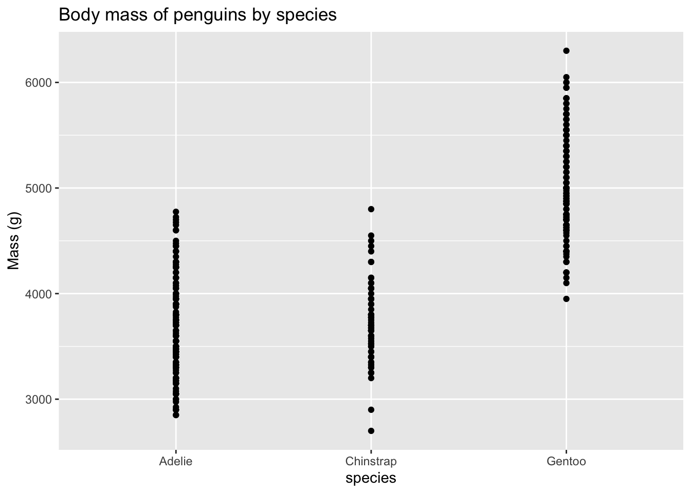
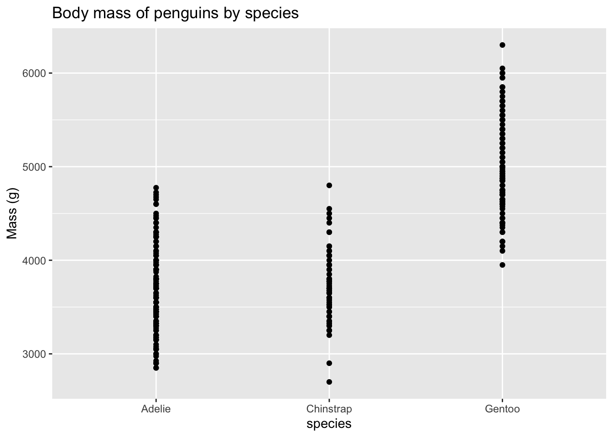
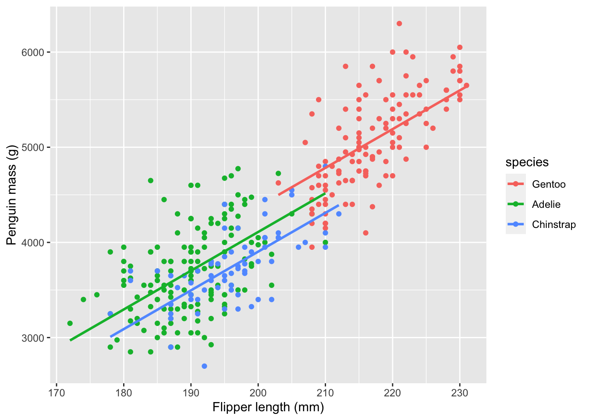
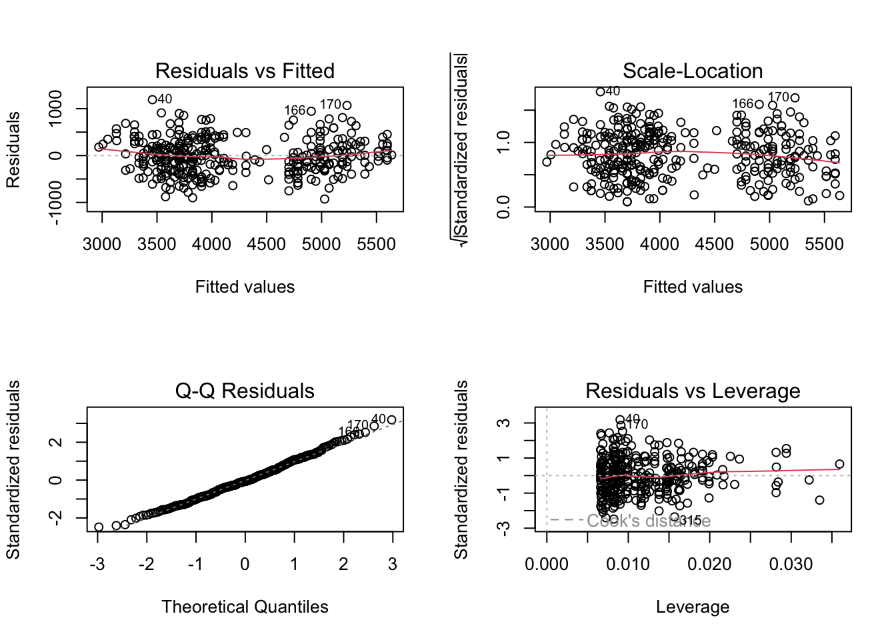
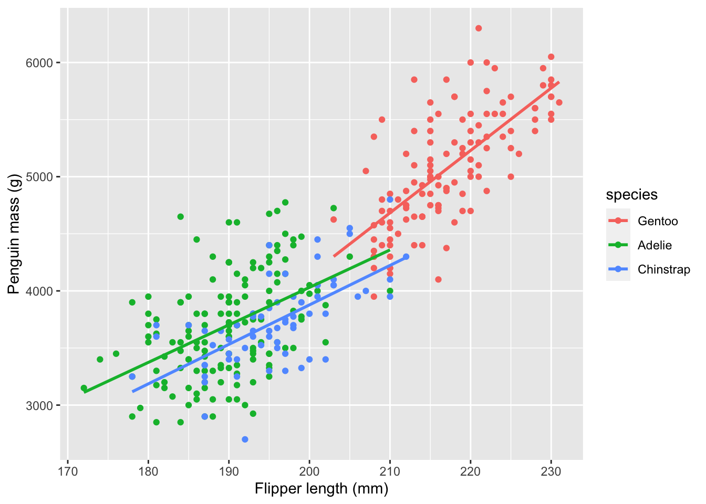
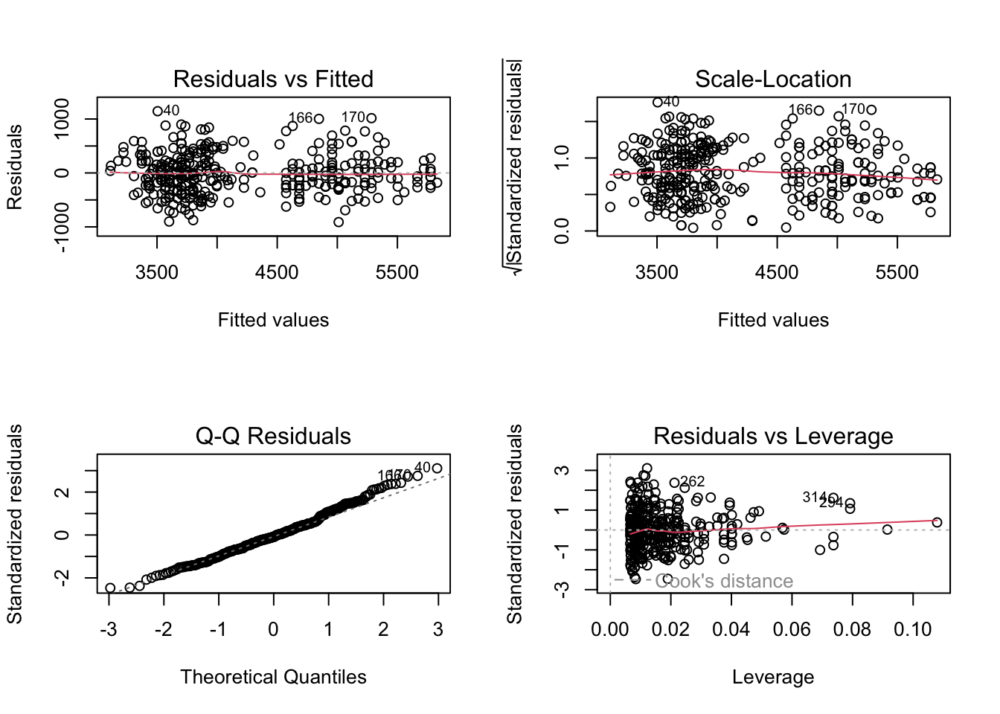

ggplot(penguins) +
aes(x=species, y=body_mass_g) +
geom_point() +
ggtitle("Body mass of penguins by species") +
ylab("Mass (g)")Warning: Removed 2 rows containing missing values (`geom_point()`).
Categorical data are a common occurrence in regression modeling. These are any data that consist of categories rather than numbers. For instance, in a forestry experiment, you may thin the trees in some plots and do a prescribed burn in others. “Prescribed burn” and “thinning” aren’t numerical values, they are categories of treatment.
There is a grey area where categories are ordered, like low, medium, high. We will talk about two ways to handle those.
In R, categorical variables are called factors. Deep down in the machinery of a regression model, factor effects are handled the same way as continuous features But to fully appreciate this, you have to understand that the factors are coded differently than continuous features. To begin, we should note that linear regression for factor variables is also a kind of scatterplot smoother. Let’s look at an example:
The plot shows the mass of penguins measured at the Palmer Station LTER site in Antarctica, with the data coming from Allison Horst’s palmerpenguins package.
ggplot(penguins) +
aes(x=species, y=body_mass_g) +
geom_point() +
ggtitle("Body mass of penguins by species") +
ylab("Mass (g)")Warning: Removed 2 rows containing missing values (`geom_point()`).
Look carefully at the x-axis and you’ll see that the coordinates are species names, not numbers. A line drawn to fit the points would imply that there is a specific order to the species and a specific spacing between them, and that there are some intermediate values where the mass would be somewhere between the known species. But none of those are true.
ggplot(penguins) +
aes(x=species, y=body_mass_g) +
geom_point() +
geom_abline(intercept=1800, slope=1200, color="blue") +
ggtitle("Body mass of penguins by species with linear fit") +
ylab("Mass (g)")Clearly, we need to treat the species as categories, rather than as coordinates along a continuum. Looking at the summary of a regression model gives a clue as to how that works.
penguin_lm = lm(body_mass_g ~ species, data=penguins)
tidy(penguin_lm) |> kable(digits=2)| term | estimate | std.error | statistic | p.value |
|---|---|---|---|---|
| (Intercept) | 3700.66 | 37.62 | 98.37 | 0.00 |
| speciesChinstrap | 32.43 | 67.51 | 0.48 | 0.63 |
| speciesGentoo | 1375.35 | 56.15 | 24.50 | 0.00 |
Now let’s see the mean masses of the three species.
cat("Mean mass by species:\n")Mean mass by species:penguin_means = with(penguins_small, split(body_mass_g, species)) |>
sapply(mean, na.rm=TRUE) |>
round(2)
print(penguin_means) Adelie Chinstrap Gentoo
3580 3660 5150 Notice that the fitted value of the (Intercept) is identical to the average mass of an Adelie penguin, and that there are two rows of species effects, instead of the one row that we saw for the continuous effects so far. The values of the Estimate column in those rows are the estimated effects for Chinstrap and Gentoo penguins - and they are equal to the difference between the average mass of those penguins and Adelie penguins.
The reason that the results look like this can be made more clear if you look at the way R converts the categories to numbers. The model.matrix() is the function that R uses internally to prepare data for an lm(), but we can call it ourselves. Remember that linear regression works by multiplying each term by a coefficient, adding adding the results together. Here, we have three terms for the three species. Adelie has been automatically selected as the reference level because it appears first in the data.
tail(model.matrix(penguin_lm)) (Intercept) speciesChinstrap speciesGentoo
339 1 1 0
340 1 1 0
341 1 1 0
342 1 1 0
343 1 1 0
344 1 1 0Here, we have three terms: (Intercept), speciesChinstrap, and speciesGentoo. So to calculate the mass that is estimated for row 12, we will add 1 * (Intercept) + 1 * speciesGentoo. Since the effect (Intercept) is the average mass of the Adelie penguins, the effect speciesGentoo must be the difference between the mean mass of Gentoo penguins and the mean mass of Adelie penguins. Why no term for speciesAdelie? It’s because the fit would then depend on how mass was apportioned between the penguin species and the intercept. You could increase the intercept by 10 grams and reduce all three species estimates by 10 grams and end up with the same model fit, despite different effects. The computer has no way of deciding between those options, because it just optimizing the model fit.
You don’t have to set one factor level to be the reference for estimation, but that goes beyond the scope of this introductory workshop. You may need to change which level is the reference, and that is within our scope. R has a function relevel(), which takes the argument ref=, which specifies the reference level of a factor. Here is how it would work to set Gentoo as the reference level:
penguins$species = relevel(penguins$species, ref="Gentoo")
releveled_penguin_model = lm(body_mass_g ~ species, data=penguins)
summary(releveled_penguin_model)
Call:
lm(formula = body_mass_g ~ species, data = penguins)
Residuals:
Min 1Q Median 3Q Max
-1126.02 -333.09 -33.09 316.91 1223.98
Coefficients:
Estimate Std. Error t value Pr(>|t|)
(Intercept) 5076.02 41.68 121.78 <2e-16 ***
speciesAdelie -1375.35 56.15 -24.50 <2e-16 ***
speciesChinstrap -1342.93 69.86 -19.22 <2e-16 ***
---
Signif. codes: 0 '***' 0.001 '**' 0.01 '*' 0.05 '.' 0.1 ' ' 1
Residual standard error: 462.3 on 339 degrees of freedom
(2 observations deleted due to missingness)
Multiple R-squared: 0.6697, Adjusted R-squared: 0.6677
F-statistic: 343.6 on 2 and 339 DF, p-value: < 2.2e-16With Gentoo as the reference level for species, the summary of model results tells us directly that the body mass of Adelie and Chinstrap penguins are both significantly less than that of Gentoo penguins. However we set the factor levels, the model predictions remain unchanged, which helps emphasize that the factor coding affects which interpretation(s) are emphasized in the summary but does not change the model.
# compare predictions between the models with different contrasts:
pred_df = data.frame(species=c("Adelie", "Chinstrap", "Gentoo"))
predict(penguin_lm, pred_df) 1 2 3
3700.662 3733.088 5076.016 predict(releveled_penguin_model, pred_df) 1 2 3
3700.662 3733.088 5076.016 Of course, continuous and categorical features don’t have to be kept separate. We’ll return to our original example and consider whether the relationship between a penguin’s mass and its flipper length is different between the three species. You combine categorical and continuous features by adding them together in the formula.
# create a model with both species and flipper length as features
combo_model = lm(body_mass_g ~ flipper_length_mm + species,
data=penguins)Here is a visualization of the model fit:

As you can see, adding a categorical factor to the model has resulted in a vertical offset between the regression lines for each species, and the three regression lines all have the same slope. You should therefore interpret the species effects as species-specific intercepts for the regression line. Now, let’s generate the summary plots and the model summary.
# plot the model diagnostics
#| warning: false
#| message: false
layout(matrix(1:4, 2, 2))
plot(combo_model)
# check out the model summary
summary(combo_model)
Call:
lm(formula = body_mass_g ~ flipper_length_mm + species, data = penguins)
Residuals:
Min 1Q Median 3Q Max
-927.70 -254.82 -23.92 241.16 1191.68
Coefficients:
Estimate Std. Error t value Pr(>|t|)
(Intercept) -3764.667 667.844 -5.637 3.65e-08 ***
flipper_length_mm 40.705 3.071 13.255 < 2e-16 ***
speciesAdelie -266.810 95.264 -2.801 0.00539 **
speciesChinstrap -473.320 86.746 -5.456 9.41e-08 ***
---
Signif. codes: 0 '***' 0.001 '**' 0.01 '*' 0.05 '.' 0.1 ' ' 1
Residual standard error: 375.5 on 338 degrees of freedom
(2 observations deleted due to missingness)
Multiple R-squared: 0.7826, Adjusted R-squared: 0.7807
F-statistic: 405.7 on 3 and 338 DF, p-value: < 2.2e-16The summary tells up how big are the differences between the species-specific intercepts. The diagnostic plots still exhibit a “U” shape in the Fitted Vs. Residual plot, so we haven’t yet found an ideal regression model for this data.
We can improve this model further by adding an interaction between the species and the flipper length. An interaction allows the regression lines to have different slopes for the different species, as seen here:

There will still be different intercepts between species because I have retained the so-called “main effect” of species. An intercept is written in an R formula by placing a colon (:) between two variables.
# create a model interacting species and flipper length as features
interaction_model =
lm(body_mass_g ~ flipper_length_mm + species + flipper_length_mm:species,
data=penguins)And now we can look at the diagnostics.
# plot the model diagnostics
layout(matrix(1:4, 2, 2))
plot(interaction_model)
# check out the model summary
summary(interaction_model)
Call:
lm(formula = body_mass_g ~ flipper_length_mm + species + flipper_length_mm:species,
data = penguins)
Residuals:
Min 1Q Median 3Q Max
-911.18 -251.93 -31.77 197.82 1144.81
Coefficients:
Estimate Std. Error t value Pr(>|t|)
(Intercept) -6787.281 1124.195 -6.037 4.14e-09 ***
flipper_length_mm 54.623 5.174 10.557 < 2e-16 ***
speciesAdelie 4251.444 1427.332 2.979 0.00311 **
speciesChinstrap 3750.085 1676.687 2.237 0.02597 *
flipper_length_mm:speciesAdelie -21.791 6.941 -3.139 0.00184 **
flipper_length_mm:speciesChinstrap -20.049 8.190 -2.448 0.01487 *
---
Signif. codes: 0 '***' 0.001 '**' 0.01 '*' 0.05 '.' 0.1 ' ' 1
Residual standard error: 370.6 on 336 degrees of freedom
(2 observations deleted due to missingness)
Multiple R-squared: 0.7896, Adjusted R-squared: 0.7864
F-statistic: 252.2 on 5 and 336 DF, p-value: < 2.2e-16The “U” shape in the residuals is gone! Also, the significantly negative coefficients for the interactions of flipper length with species Adelie and Chinstrap tells us that body mass for these species increases less quickly with flipper length than for Gentoo penguins. You can see this same relationship in the steeper slope of the red line in the scatter plot with interactions.